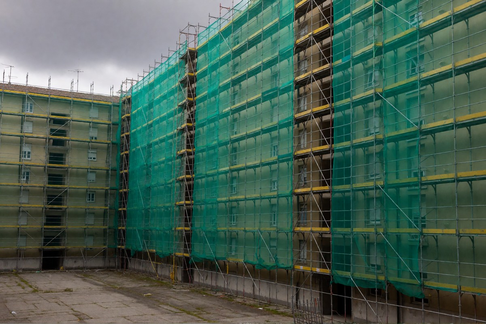

Politica italiana · 20 novembre 2026
Conte di nuovo al governo? I conti che fanno paura

Superbonus, Reddito di cittadinanza, acquisti del Covid, Recovery Fund e la revoca mai arrivata ad Autostrade. L'editoriale dell'autore sul ritorno di Giuseppe Conte a Palazzo Chigi, documenti pubblici alla mano.
di Franco Zanghì
C'è una possibilità che preoccupa: il ritorno di Giuseppe Conte a Palazzo Chigi, da protagonista o da comprimario. I sondaggi mettono il campo largo testa a testa con il centrodestra, le primarie sono previste entro febbraio e Conte rivendica la leadership. Il programma comune parte da una bandiera: il Reddito di cittadinanza, in versione «Reddito 2.0».
Prima di chiedersi che cosa farebbe, conviene guardare che cosa ha fatto. Solo documenti pubblici: Corte dei conti, Corte dei conti europea, Istat, Banca d'Italia.
Il Superbonus
Lo vara il governo Conte due con il decreto Rilancio, nel maggio del 2020: detrazione al 110 per cento, cessione del credito, nessun tetto di spesa, e chi faceva i lavori che quasi non pagava nulla. Secondo la Corte dei conti tutti i bonus edilizi fra il 2020 e il 2024 sono costati 229 miliardi. Sul solo Superbonus le stime cambiano a seconda di chi conta, ma stanno sopra i 100 miliardi. Il ministro Giancarlo Giorgetti ha detto che pesa 40 miliardi nel 2026 e altri 20 nel 2027.
La Corte dei conti europea lo mette fra i programmi più costosi per metro quadro riqualificato. Banca d'Italia e Corte dei conti stimano che circa un quarto dei lavori si sarebbe fatto comunque. L'Istat calcola un effetto sul Pil fra 1,4 e 2,6 punti in due anni. Conte, invece, ha raccontato per anni cifre molto più alte, e Pagella Politica gli ha contestato quei numeri più di una volta.
Il Reddito di cittadinanza
Governo Conte uno, con la Lega: Quota 100 era della Lega, il Reddito del Movimento. Nel 2020 la Corte dei conti scriveva che solo il 2 per cento dei percettori aveva trovato lavoro, e Il Foglio sostiene che fosse ancora meno. I navigator dovevano portare il lavoro, e non l'hanno portato. Oggi, secondo l'Inps, lo Stato deve ancora recuperare circa 1,46 miliardi.
In questi giorni Libero racconta, in sei puntate, un documento interno dell'Inps secondo cui i controlli preventivi si potevano fare. È la tesi del giornale, e Pasquale Tridico la contesta. Ma la domanda resta: perché non si fecero?
Il Covid
Come siano andate le cose è ancora oggetto di discussione nella Commissione Covid. E qui il comportamento di Conte pesa: il 2 agosto si dimette dalla commissione, l'audizione arriva dopo una lunga serie di rinvii e, quando arriva, lui la chiama «plotone d'esecuzione». Chi ha la coscienza a posto non si comporta così.
Poi ci sono gli acquisti del commissario Domenico Arcuri, scelto da Conte: banchi a rotelle, mascherine, 81 milioni per ReiThera, il vaccino italiano che la Corte dei conti ha bloccato perché l'investimento non era valido. Il decreto Cura Italia sottraeva quegli acquisti al controllo della Corte dei conti. Spendere in emergenza era inevitabile. Spendere senza controlli è stata una scelta.
Il Recovery Fund
Conte se ne attribuisce il merito. Ma i soldi non li ha scelti lui: li assegna una formula europea, automatica. Il 70 per cento in base a popolazione, reddito per abitante e disoccupazione; il resto in base alla perdita di Pil nel 2020 e nel 2021. L'Italia prende tanto perché era messa male, non perché Conte sia stato bravo.
E c'è di più. Quando Germania, Francia e Spagna hanno preparato i loro piani, i prestiti non li hanno chiesti. L'Italia sì, tutti: oltre 122 miliardi, un debito che restituiamo noi, dal 2028. Il resto, le sovvenzioni, lo ripaghiamo in parte come europei. Soldi regalati non sono mai stati.
Il Ponte Morandi e Autostrade
Dopo il crollo, Luigi Di Maio e Conte promettono la revoca della concessione, «senza se e senza ma», e Conte la vende come una punizione. Come finisce? Luglio 2020: i Benetton escono da Autostrade per l'Italia. E nel 2021 Atlantia, la società che controllava Autostrade, incassa 9,1 miliardi dallo Stato attraverso Cassa depositi e prestiti. Più di 2 miliardi e mezzo vanno ai Benetton. E il giorno in cui il governo presenta il piano, il titolo Atlantia sale del 26 per cento.
Questa non sembra una punizione. Sembra un premio, alla società responsabile del crollo del Ponte Morandi.
La coerenza, e le tre domande
Conte uno con la Lega, Conte due con il Pd, e lui dice che è sempre stata continuità. Si può leggere anche così: un'idea di governo che sta dove sta la maggioranza.
Il Reddito 2.0 costa fra 9 e 10 miliardi l'anno. Prima di firmare, sono tre le cose da sapere. C'è un tetto di spesa? Ci sono i controlli preventivi? Chi risponde se si sbaglia?
Il giudizio è questo: un governo con Conte protagonista, o anche solo comprimario forte, sarebbe un rischio serio per i conti dell'Italia. Se Conte dimostrerà il contrario, con i numeri e non con gli slogan, lo si scriverà.
Fonti
- Corte dei conti, relazioni sui bonus edilizi e sul Reddito di cittadinanza
- Corte dei conti europea, relazione sui programmi di efficientamento energetico degli edifici
- Istat e Banca d'Italia, valutazioni sull'effetto del Superbonus sul Pil e sull'addizionalità dei lavori
- Inps, dati sul recupero delle somme indebitamente percepite; Libero, l'inchiesta in sei puntate sui controlli preventivi, novembre 2026
- Osservatorio sui conti pubblici italiani, il meccanismo di riparto del Recovery Fund
- Il Resto del Carlino, la vendita di Autostrade per l'Italia e l'operazione con Cassa depositi e prestiti
- Panorama e La Sicilia, i lavori della Commissione parlamentare d'inchiesta sul Covid
- Pagella Politica, le verifiche sulle cifre del Superbonus citate da Giuseppe Conte
Ricostruzione dell'autore basata su documenti pubblici e su articoli di stampa citati nel piede. È un editoriale: contiene valutazioni dell'autore, distinte dai dati riportati. La tesi di Libero sui controlli preventivi dell'Inps è contestata da Pasquale Tridico.